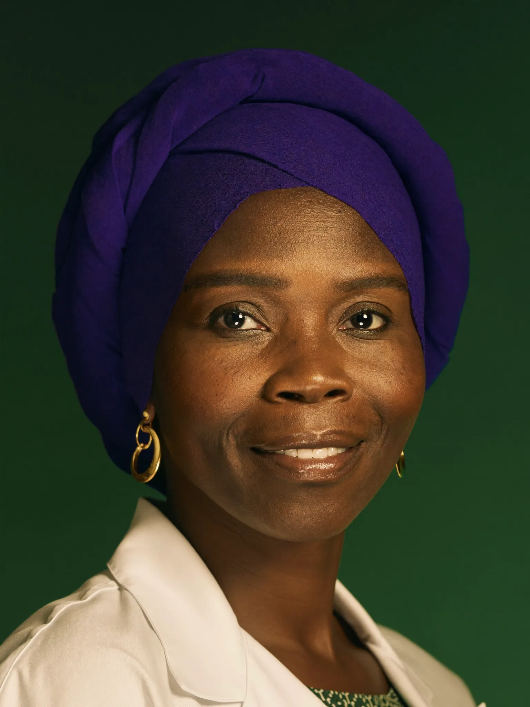
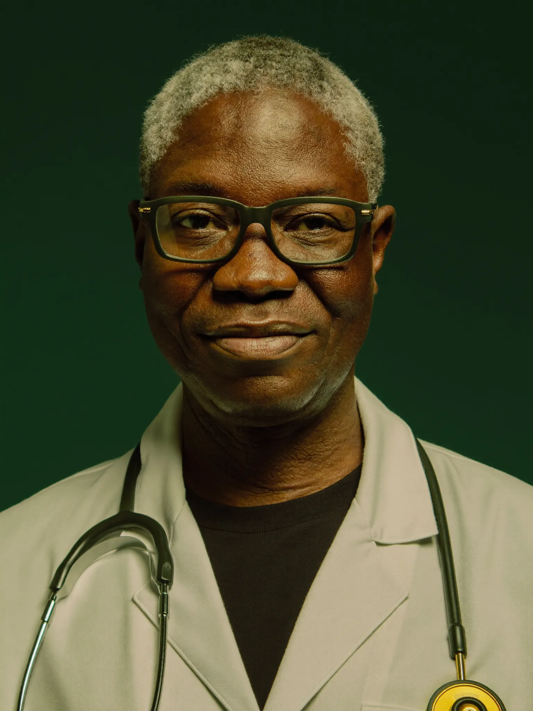

Ndimbal Santé — « l'aide », en wolof. Une équipe médicale d'intelligence artificielle, gratuite pour le patient, qui parle et écoute en français et en wolof, et oriente vers les structures de santé. Déjà en ligne. Déjà fonctionnelle.

Gynécologie
Cardiologie+ infectiologie, dermatologie, ophtalmologie, nutrition, pharmacie.
Chaque spécialiste suit une méthode de consultation encadrée et les protocoles OMS / PCIME / PNLP.
| Priorité nationale | Apport de Ndimbal Santé |
|---|---|
| Couverture Sanitaire Universelle | Le premier contact gratuit, partout, 24h/24 |
| Santé mère-enfant | Gynécologie + pédiatrie PCIME + relais CPN/TPI |
| Cardiopathies & maladies chroniques | Dépistage HTA, éducation thérapeutique, signes AVC |
| Dépistage précoce (cancer…) | Orientation dès les premiers signes vers les centres |
| Lutte contre le paludisme | Campagnes CPS / MII / TPI intégrées et vocalisées |
| Inclusion (langues, analphabétisme) | Vocal wolof — unique en son genre |
On n'étend que sur résultats prouvés. Le risque institutionnel est encadré ; l'impact est mesuré.
| Poste | Contenu | Budget |
|---|---|---|
| Validation médicale | Comité de 10 spécialistes sénégalais (vacations, revues de contenu) | 8 M |
| Plateforme souveraine | Backend sécurisé hébergé au Sénégal, conformité CDP, comptes structures | 12 M |
| Voix & langues | Voix naturelles wolof, puis pulaar et sérère (enregistrements + synthèse) | 7 M |
| Déploiement terrain | 1 district : formation de 100 relais et infirmiers, supervision, supports | 12 M |
| Évaluation indépendante | Protocole, collecte, analyse, rapport public | 5 M |
| Coordination | Équipe projet et fonctionnement, 6 mois | 6 M |
| Total phase pilote | ≈ 76 000 € / 84 000 $ | 50 M FCFA |
Phase 2 — extension nationale (14 régions, 24 mois) : 350 M FCFA, déclenchée uniquement sur les résultats du pilote.
Avec votre parrainage moral, une mise en relation avec le Ministère de la Santé, et le financement de la phase pilote (50 M FCFA), nous prouvons ensemble — chiffres à l'appui — que chaque Sénégalais peut avoir un premier contact médical de qualité, dans sa langue, gratuitement.